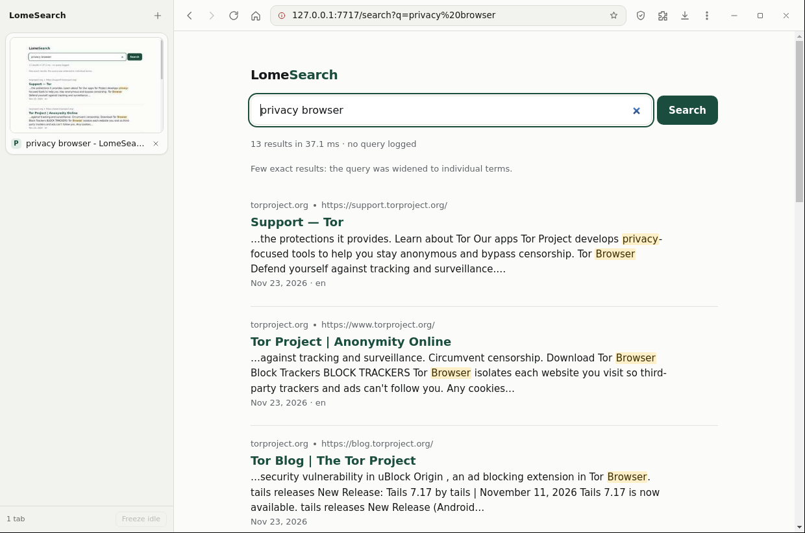

Indice locale BM25
Segmenti immutabili, merge in background, postings compressi. La ricerca classifica per rilevanza con BM25 e normalizza la lunghezza del documento.
Browser e motore di ricerca · Apache-2.0
LomeSearch è un browser desktop con il suo motore di ricerca. L'indice sta sul tuo disco, il crawler gira sulla tua macchina, le ricerche non partono da nessuna parte.

Non è un fork di Chromium con un'altra skin: è un motore di ricerca vero, scritto da zero in TypeScript, più un guscio Electron che lo usa come home page e come motore predefinito.
Il motore costruisce segmenti immutabili sul disco e li interroga con BM25: niente database esterni, niente servizi da chiamare, niente limite di query al giorno.
Indicizzi la documentazione che usi, il tuo blog, l'intranet: quello che cerchi è esattamente quello che hai messo dentro.
Legge robots.txt prima di ogni host, tiene un solo dominio alla volta con
un ritardo configurabile, segue le sitemap e scarta le pagine quasi identiche con SimHash.
Se un sito parla IndexNow, il motore accetta le sue notifiche e mette le URL in cima alla coda invece di aspettare il prossimo giro.
Le cartelle di estensione Chrome si caricano così come sono: content script, CSS iniettato, blocker, lettori, password manager.
Electron copre una parte delle API; il resto è dichiarato apertamente invece di essere promesso e poi negato.
Il motore non ha un endpoint per registrare le query. Non esiste un posto in cui finiscano. docs/engine.md
Ogni voce è implementata in questo repository, non è una roadmap: si può leggere il codice, eseguire i test e ricompilare tutto in locale.
Segmenti immutabili, merge in background, postings compressi. La ricerca classifica per rilevanza con BM25 e normalizza la lunghezza del documento.
robots.txt per host, ritardo minimo, concorrenza limitata, sitemap,
deduplica SimHash e frontier persistente: si può interrompere e riprendere.
POST /indexnow accetta il payload standard, verifica la chiave sul sito e
mette le URL a priorità zero. La CLI sa anche inviare ai motori esterni.
214 regole incluse, filtri cosmetici, cookie di terze parti bloccati, HTTPS-first, DNS over HTTPS, WebRTC disattivato, referrer ridotto al minimo.
Carichi una cartella con manifest.json e l'estensione parte nella
sessione normale. Nelle finestre private resta spenta.
Le schede stanno in colonna con un'anteprima dal vivo; quelle ferme da troppo tempo vengono congelate per non consumare memoria.
In più: OpenSearch per aggiungere il motore a un altro browser · CLI completa · API HTTP su
127.0.0.1:7717 · import di documenti in JSONL · chiave IndexNow servita dal
motore · snippet con i termini evidenziati · ricerca in italiano e inglese.
Un comando, una lista di URL o un file JSONL. Il crawler legge le regole del sito, aspetta il tempo dovuto fra una richiesta e l'altra e salva il frontier su disco: se lo interrompi, riparte da dove era.
Il motore apre i segmenti in memoria mappata e risponde in BM25 con gli snippet già evidenziati. Il server ascolta solo su loopback, a meno che tu non gli dica il contrario.
Quando un sito pubblica qualcosa di nuovo, può avvisare il motore con
POST /indexnow: la verifica della chiave passa dal file sul sito, non da
un accordo fra server. Le URL accettate vengono ricrawlate subito.
# indicizza un sito, con le regole del sito lomesearch crawl https://tuosito.it --max-pages 500 # il browser avvia il motore da solo; da terminale è così lomesearch serve --port 7717 # cerca, in JSON o in HTML lomesearch search "privacy browser" --json
Le immagini sono catturate dall'app in esecuzione su un indice di prova con pagine del Tor Project e della EFF.
manifest.json caricata a mano, con nome, versione, percorso e stato. Nelle finestre private non viene eseguita.
Non c'è un reparto marketing che decide cosa raccogliere: c'è un elenco di file. Questa
è la versione breve di docs/privacy.md.
| Dato | Dove | Perché |
|---|---|---|
| Testi indicizzati | ~/.local/share/lomesearch |
servono a mostrare risultati e snippet |
| Cronologia e preferiti | database SQLite nel profilo | solo se li usi; si cancellano dal menu |
| Query | nessun posto | il motore non scrive un log delle ricerche |
| Contatori dei blocchi | memoria del processo | per il pannello privacy, aggregati per dominio |
| Chiave IndexNow | indexnow-key.txt |
per farsi verificare dai siti che notificano |
127.0.0.1: per aprirlo alla LAN devi dirlo tu.
I pacchetti sono firmati e pubblicati su GitHub Releases con il codice sorgente della stessa versione. Ogni file ha il suo SHA-256 qui sotto.
Pacchetto amd64 con l'app e il motore già dentro.
sudo apt install ./LomeSearch-1.0.0-linux-amd64.deb
92cf5bad62163cf0a7d89d90508b781f5252056c8125e1c16bb24059bdf0f53c
Un file unico, senza installazione né permessi di root.
chmod +x LomeSearch-1.0.0-x86_64.AppImage ./LomeSearch-1.0.0-x86_64.AppImage
ca486c26692bdbb8055a8bff666efd06bb193f2d1833900370bcf1bd946f76a7
Installer x64; nella stessa release c'è anche la versione portable.
Windows SmartScreen chiede conferma perché il certificato non è commerciale.
de2b95f7e26cdef2a3d2d691febe1f4c5b5d128d6c0a720db9cf35680088ce15
4fe280e28ef658ceaf36aafdf4750f457c1bd2e6bdffd895bf99b7b288c57487
Un client leggero che si collega a un motore LomeSearch: lo stesso telefono sotto Termux, un desktop sulla stessa rete o un piccolo server di casa. Android 7 o successivo.
720c209982daca90385b35507ec4cd998b6807b885fabc259166ce1990999b7b
macOS: la configurazione dmg e zip è nel repository
(npm run dist:mac), ma i runner macOS non sono attivi nella CI pubblica. Su
Apple Silicon funziona anche il motore da sorgente. Tutti i pacchetti:
GitHub Releases v1.0.0.
git clone https://github.com/ciao22king/LomeSearch.git cd LomeSearch npm install npm run build # motore in primo piano node packages/engine/dist/src/cli.js serve --port 7717 # oppure i pacchetti npm run dist:linux # dist:win · dist:mac · dist:android
Il browser non sa nulla di indici e il motore non sa nulla di schede: si parlano via IPC e HTTP su loopback, quindi si possono usare separatamente.
127.0.0.1: /search, /stats,
/suggest, /opensearch.xml, /indexnow,
/indexnow/<key>.txt.
lome://.
npm test.
browser · Electron 33
├── ui tab verticali, omnibox, lome://
├── rete tracker, cookie 3p, DoH, referrer
└── ipc ─────────────┐
│ http://127.0.0.1:7717
motore · Node ≥ 22 ▼
├── crawler robots.txt · sitemap · IndexNow
├── parser html, encoding, simhash
├── indice segmenti + BM25 su disco
└── server /search /suggest /stats /indexnow
No. Il motore è un processo locale che il browser avvia e spegne da solo; se preferisci
tenerlo su un'altra macchina, puoi avviarlo con --bind 0.0.0.0 e puntare il
browser o l'app Android a quell'indirizzo.
La ricerca sì: l'indice è sul disco e non chiama nessuno. Le pagine che non hai già indicizzato, ovviamente, non ci sono.
No. È un'opzione in più: se un sito pubblica un file chiave e invia le URL al motore, la coda le ricrawla subito. Senza IndexNow funziona tutto, solo con qualche minuto di ritardo.
Non direttamente: il Web Store non è disponibile fuori da Chrome. Si caricano le cartelle delle estensioni (quelle che scarichi dal repository dell'estensione o che spacchetti tu). Le API supportate sono un sottoinsieme di quelle di Chrome.
Niente. Licenza Apache-2.0, nessun account, nessun piano a pagamento. Se vuoi contribuire, i test e le segnalazioni sul repository sono la parte utile.
Chiudi l'app e cancella la cartella dati: ~/.local/share/lomesearch su Linux,
%APPDATA%\LomeSearch su Windows. Non resta niente altrove.